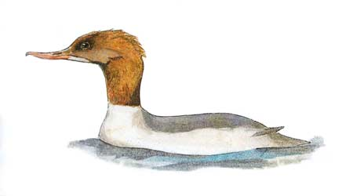

Goosander
An unusual yet regular winter visitor to the reservoir.

No records prior to 1961. (N.B. Usually visits during cold weather).
26/12/61 - 9 birds, an exceptional number, Seen also on 27/12.
09/12/62 - Single female.
01/01/63 - 10 birds. single bird seen on 13/01.
01/12/65 - 4 birds.
17/11/66 - 2 birds.
08/02/68 - Single female.
08/01/70 - Single female. Seen again on 22/01 & 19/03.
07/02/76 - 2 birds. Seen again on 08/02.
14/02/76 - 4 birds. Single bird present on 22/02.
31/12/78 - Single bird.
01/01/79 - 3 birds, increasing to 9 on 13/02, remaining until 21/03.
04/01/80 - 2 birds, inc. a male.
27/01/85 - Up to 6 females. Remained through until 22/02.
01/12/85 - 2 females.
28/11/87 - Single female.
22/01/88 - Single female.
15/10/92 - Single female for one day only & 1st record in the county during 2nd winter period.
08/12/96 - 2 birds, a male & imm. Female. (BS) & (DH).
25/12/96 - 11 females. Record count to date. 10 females on 26/12 & 5 males on 27/12.
15/01/97 - Single female. Seen again on 28/01 through until 27/02.
21/12/97 - 3 females, remaining until 25/12.
04/01/98 - Single female, remaining until 23/02 although not recorded every day.
15/11/98 - Single male. Seen again on 16/11. (AJB).
18/12/99 - Single pair.
21/01/00 - 4 birds. Single male & 3 females. 2 males & a female seen on 22/01 (at least 5 birds over the 2 days).
09/11/01 - Single male seen for 2 days
05/01/04 - Single female
29/11/04 - Pair
24/12/04 - Single female and again on 26/12, but not found on 25/12
18/11/07 - Single female seen for 2 weeks, but not every day
23/12/07 - 2 males
20/12/09 - Single female with 2 birds present for the next 3 days and another single on 31/12/09
2010 - Seen on a remarkable 60 dates from January through to mid April and from mid November through to early December with max 3 redheads and 2 drakes in December
2011 - Recorded on 27 dates with a single male through most of January and February, but also 3 on 06/01, a male on 16/12 and a redhead on 20/12
2012 - A single male during January, 2 males on 02/02 and a single redhead from 7-10/02. Recorded on 14 dates
2013 - A redhead on 31/01, a male on 23/03, a redhead on 02/08 and a redhead stayed from 18/11 to 28/11
2014 - A redhead on 12/01 and a redhead seen regularly from 10/11 to 31/12
2015 - The redhead that arrived on 29/12/2014 stayed from the begining of the year until 17/01
2017 - All redheads - 1 on 18/01, 5 on 08/11, 1 on 21/11, 4 on 03/12, 1 on 11/12
2018 - One male on 09/12 (SH)
2019 - One male on 28/10 (SH) and one redhead on 13/12 (KGH)
2020 - One redhead on 03/11 (DWH)
2021 - A pair on 06/03 (DWH). 3 redheads on 22/11 (KGH) A pair on 03/12 (DWH). An immature male on 25/12 (DWH). A male, probably the same bird as previous day on 26/12 (SH)
2022 - One redhead on 15/12 (DWH)
2023 - One to roost on 06/11,12/11 and 24/11. 2 on 28/11 all redheads (DWH)
2024 - One to roost on 09/10, 12/11, 28/11 and 03/12, all redheads. Also 3 redheads on 15/07 and another 3 on 17/11 (DWH, KGH and Gary Andrews)
2025 - Recorded on 23 dates. In the first winter period, a pair on 01/02 (AG), a pair on 07/02 and a male on 21/02. In the second winter period, a redhead arrived at dusk on 17/11 (KGH). Then from 19/11, 1 or 2 from a pair were seen daily until 11/12, with an additional redhead (so 3 birds) on 03/12 and 04/12